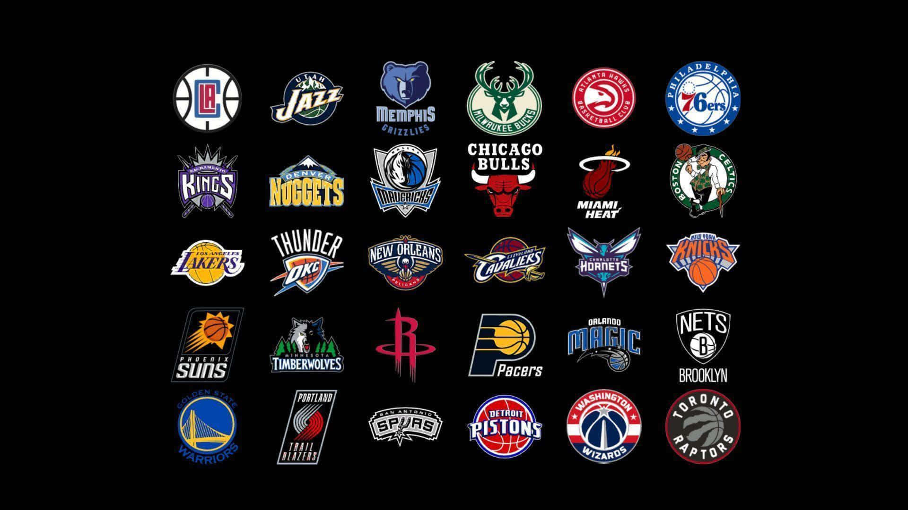
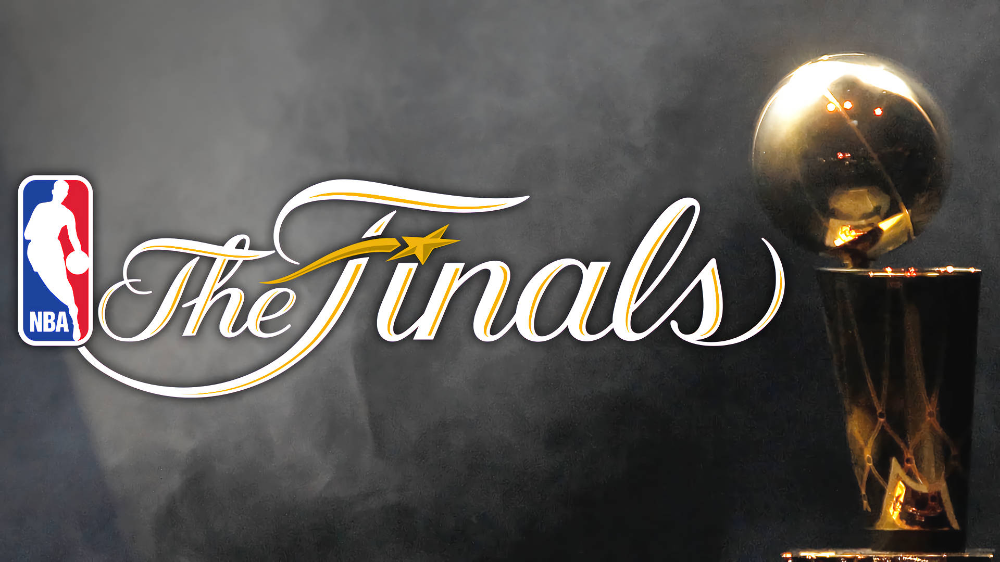
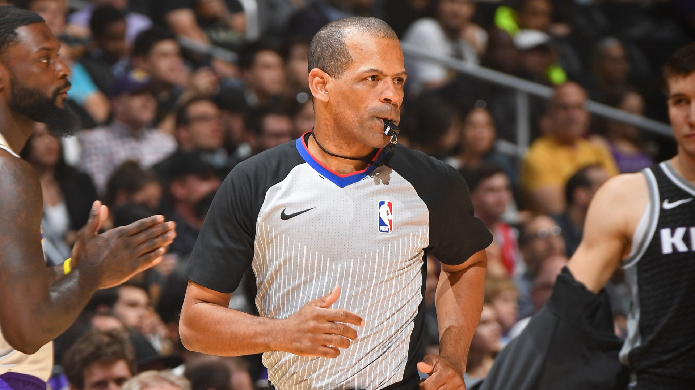

A National Basketball Association, ou NBA, surgiu em 1946 com 11 times. Ao longo dos anos, a liga passou por mudanças e hoje conta com 30 equipes divididas entre as conferências Leste e Oeste.
O basquete americano no final da década de 40 não era tão prestigiado pelos fãs, onde o basquete universitário tomava maior parte dos fãs e a mídia, que tinham mais interesse nos times e franquias.
A NBA é dividida em diversas épocas, cada uma descrevendo uma parte da história da liga e marcos dela:
- Foi de 1956 até 1970
- Boston Celtics dominaram está época, vencendo 11 dos 13 títulos que disputou
- Maior sequência de títulos do basquete, sendo 8 títulos seguidos
- Principais jogadores: Bill Russel, Wilt Chamberlain, McHale.
- Era dominada por pivôs e alas
- Ano de 1966
- 14 franquias adicionadas, com destaque ao Chicago Bulls
- Incluiu um Draft de expansão para novas franquias terem novos jogadores
- Representou um marco de crescimento
- Introduzida a linha de 3 pontos a NBA
- Tendência a arremessar de longe aumentou
- Jogadores se destacaram por conta do arremesso
- Rivalidade entre Lakers e Celtics marcou a década
- Estrelas como Magic Johnson e Larry Bird em destaque
- NBA atinge novos patamares de audiência
- Domínio do Chicago Bulls com 6 títulos
- Michael Jordan se torna ícone global do basquete
- Popularização mundial da NBA
- Estilo de jogo atlético e competitivo
- Evolução para um jogo mais veloz e com foco em arremessos de 3 pontos
- Grandes nomes: Kobe Bryant, LeBron James, Stephen Curry
- A NBA se torna uma marca global
- Uso de tecnologia, análise de dados e valorização do coletivo
A NBA é dividida em duas conferências: Leste e Oeste. Cada uma contém 15 times. Durante a temporada regular, cada equipe joga 82 partidas.
Ao fim da temporada, as melhores equipes de cada conferência se classificam para os Playoffs, uma fase eliminatória até chegar às Finais da NBA , onde os campeões das conferências se enfrentam.
Os jogos são dinâmicos, com 4 períodos de 12 minutos, e regras específicas para faltas, posse de bola, e tempo de ataque (24 segundos).
Realize o nosso quiz após realizar o cadastro!!
Fazer o quiz!